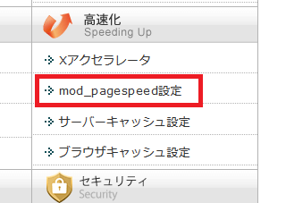

「mod_pagespeed」から「Xアクセラレータ」に変更しました
以前に「mod_pagespeed」を利用していたのですが、画像が表示されないことがあったため、当ブログでは利用しないことにしました。
エックスサーバーでも既に「mod_pagespeed」の新規受付は終了してますが、こちらは少し使いづらい気がしています。

関連記事：「mod_pagespeed」によるSEO的な影響はあるのか？
その代わりに「Xアクセラレータ」を設定したみたのですが、こちらはサーバーキャッシュの機能になるようです。
一般的なブラウザキャッシュの場合、サーバーからデータを引っ張るのではなく、ブラウザのキャッシュを利用して高速に表示させる機能になりますが、これのサーバー版と考えればよいかもしれません。
サーバーキャッシュの場合もキャッシュを作成することにより、アクセスされる度にいちいちサーバーにデータを取りに行かなくても済むようになり、高速にサイトを表示させることができます。
■通常の場合：
ユーザー ←→ サーバー
■サーバーキャッシュ機能の場合：
ユーザー ←→ キャッシュ ← サーバー
特にWordPressなどの動的なサイトの場合、アクセスがあった際にはデータベースなどからデータを引っ張ってきてHTMLファイル等を作成して表示するわけですが、大量のアクセスが集中した際にその都度ファイルを作成していたらサーバーの負荷が高くなりがちです。
そのため、一度作成したファイルをしばらくの間はサーバーでキャッシュしておき、再度アクセスがあった際にはそのキャッシュを表示させることでサーバーの負荷が減り、高速で表示される仕組みかと思います。
エックスサーバーの場合はキャッシュの保存期間が「2分間」と書いてますが、これを逆算して考えると１時間で30アクセス、仮に9時～0時までの15時間で考えると１日450アクセスぐらいのあるページの場合は効果があるのかなと感じています。
そのため、１日10アクセスぐらいのページの場合だとせいぜい１時間に１アクセスぐらいかと思いますので、再度アクセスが来るまでにキャッシュは消えてしまっているはずです。
この場合はその都度サーバーにデータを取りに行く形になるはずなので、Xアクセラレータを設定しても効果はないのかもしれません。（詳細は不明）
また、当サイトのように静的なサイトの場合、その都度ファイルを作成するわけではないため、この場合も効果は微妙かもしれませんが、公式サイトには「静的ファイルのキャッシュをサーバーに保持することで、サイトの高速化と同時アクセス数の拡張が行われます。」とあるので、おそらくは静的なサイトでも効果はあるかと思います。
WordPressなどの動的なCMSでサイトを作成しており、なおかつ膨大なアクセスが同時に集中してサーバーが落ちてしまうようなサイトの場合はメリットが多いものと思います。